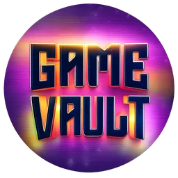
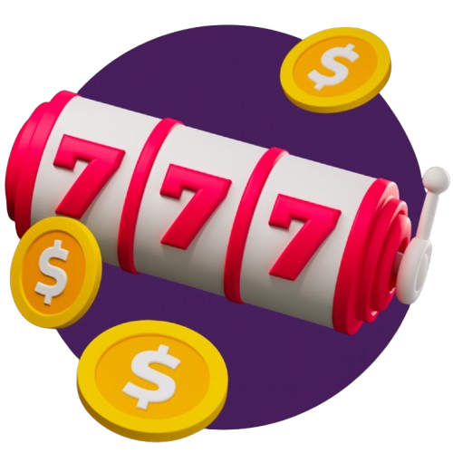

INDEPENDENT CLASH CASINO GUIDE · 18+
Arcade games,
up close.
Clash Arcade is an independent guide to Clash Casino. Click a platform to open its page: Juwa, Fire Kirin, Game Vault, and the rest of the lobby.

Find a Juwa game by its cover
Search the illustrated Juwa collection if you remember a seven, a wheel, or a buffalo. Open a cover, or go to the Juwa page for Fortune Lion, Deep Sea Predator, and Buffalo Keno.
Browse all 57 covers

From the game blog
All seven articles
Juwa
Three ways to play Juwa
Fortune Lion starts with a spin. Deep Sea Predator asks you to aim. Buffalo Keno begins with a number pick.

Fire Kirin
Inside two Fire Kirin fish games
See what changes when a coral reef gives way to a table full of sea monsters.

Game Vault 999
Three Game Vault covers worth a closer look
Take a closer look at Gold Rush Gus, Irish Pot Luck, and the “Cash Collect” lettering on Sahara Riches.

Juwa or Juwa 2.0?
Epic Summer appears in both collections. If that’s the game you remember, its title alone won’t tell you which lobby to open. Check the platform name on your game card first.
Simple Dollar and Power Bucks also appear in both featured lists. Fortune Lion is a featured title in the original Juwa collection. For Lightning Respin or Goblin Bros, start with Juwa 2.0.
Compare the two Juwa collectionsGame platforms
Read the game blog Juwa 2.0Shared titles and new games
Juwa 2.0Shared titles and new games
 Fire KirinFish tables and reels
Fire KirinFish tables and reels

Game VaultCover art and cash collect titles Orion StarsKeno under table games
Orion StarsKeno under table games
 Milky WayOcean King and lineup notes
Milky WayOcean King and lineup notes
 River SweepsFishing and tournaments
River SweepsFishing and tournaments

Game typesSlots, fish, and kenoPlayer guides
Compare game typesWaiting for a login code?
Check the address on the registration screen, then search your inbox and spam folder. If you requested a new code, use the latest email.
Email verification helpWhere did my credits go?
Check the destination on your most recent transfer, then open that game card. A wallet entry and a game balance show different parts of the same move.
Trace a transactionWhich login should I use?
Use your Clash Casino login for the wallet. When a game opens its own sign-in screen, check the access details on that platform’s game card.
Game account help